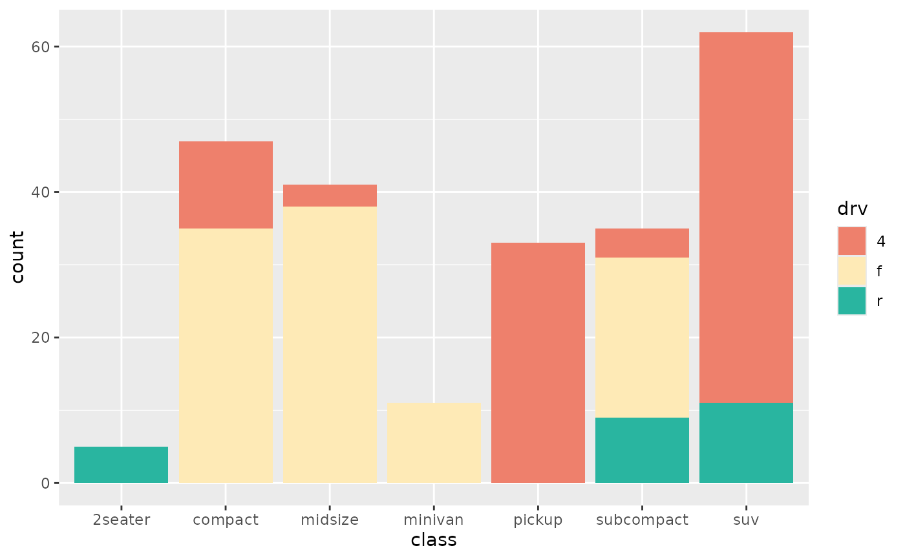

Discrete ggplot2 scales using a japanesecolors palette.
scale_color_japanesecolors() is an alias for scale_colour_japanesecolors().
Usage
scale_colour_japanesecolors(palette, ..., reverse = FALSE, na.value = "grey50")
scale_color_japanesecolors(palette, ..., reverse = FALSE, na.value = "grey50")
scale_fill_japanesecolors(palette, ..., reverse = FALSE, na.value = "grey50")Arguments
- palette
A palette ID, such as
"kawaii_tri_07". Seepalette_names().- ...
Passed on to
ggplot2::scale_colour_manual()orggplot2::scale_fill_manual(), for examplename,labelsorguide.- reverse
Whether to reverse the colour order.
- na.value
Colour used for missing values.
Details
Palettes are curated categorical sets and are used in their printed order.
If the data have more levels than the palette has colours, ggplot2 raises an
error rather than recycling or interpolating; use palettes() with the n
argument to find a palette large enough.
Examples
# \donttest{
if (requireNamespace("ggplot2", quietly = TRUE)) {
library(ggplot2)
ggplot(iris, aes(Sepal.Length, Sepal.Width, colour = Species)) +
geom_point(size = 2) +
scale_colour_japanesecolors("kawaii_tri_07")
ggplot(mpg, aes(class, fill = drv)) +
geom_bar() +
scale_fill_japanesecolors("avantgarde_four_04")
}

# }